Chapter 16 Figure 1
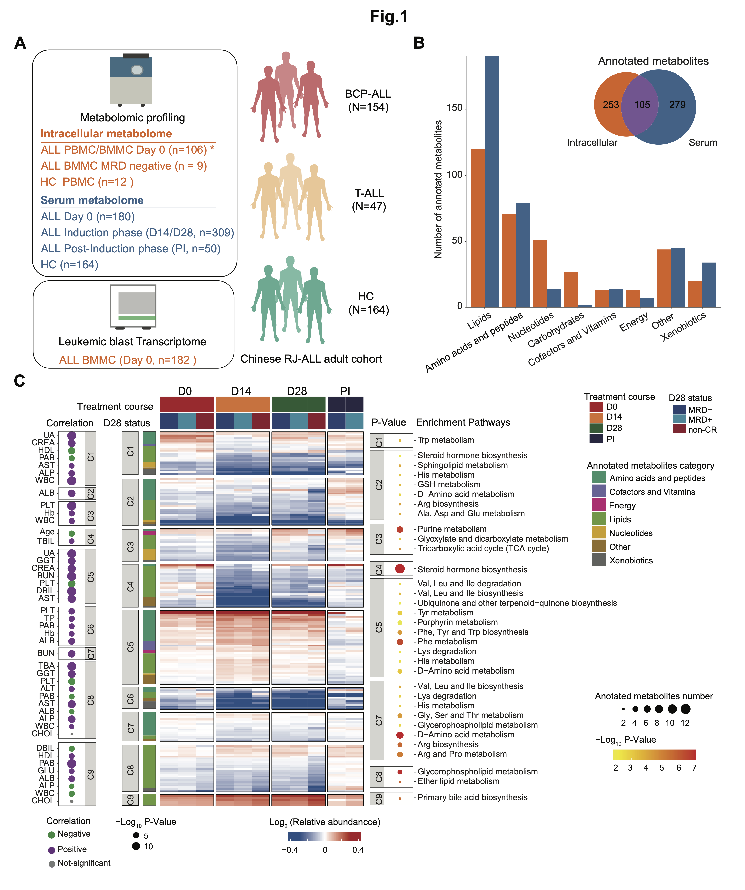
Figure 1: Construction of a multi-omics landscape of the adult ALL cohort centering on the metabolome.
A. Overview of the experimental design and the number of samples for metabolome and RNA-seq analyses. * Among the 106 samples subject to intracellular metabolome investigation on D0 of induction therapy, BMMC samples were used in 100 cases and PBMC samples were available in 6 cases.
B. Number of annotated metabolites in serum and intracellular samples, grouped by metabolites functional category, mainly based on KEGG.
C. (Middle Panel) The heatmap provides a comprehensive overview of the metabolome in BCP-ALL and T-ALL patients at specified time points, further grouped by D28 status. The entire metabolome pattern is categorized into nine clusters, with significantly enriched pathways for clustered metabolites annotated on the right (P < 0.05). Each row represents a metabolite, each column corresponds to a sample, and each score reflects its relative abundance compared to HC levels, calculated as the median within each subgroup. (Left Panel) The correlation between each cluster and clinical parameters assessed on Day 0 (D0) is displayed (P-value < 0.01). UA: uric acid; CREA: creatine; HDL: high-density lipoprotein; PAB: Prealbumin; AST: Aspartate Aminotransferase; ALP: Alkaline Phosphatase; WBC: White Blood Cell count; TBIL: Total Bilirubin; GGT: Gamma-Glutamyl Transferase; BUN: Blood Urea Nitrogen; PLT: Platelet count; DBIL: Direct Bilirubin; TP: Total Protein; ALB: Albumin; CHOL: Cholesterol; GLU: Glucose; Hb: Hemoglobin.
16.1 (B) Annotated metabolites
Number of annotated metabolites in serum and intracellular samples, grouped by metabolites functional category, mainly based on KEGG.
library(dplyr)
library(ggplot2)
#-------------------------------------------------------------------------------
# Step 1: Load metabolomics data and set parameters
#-------------------------------------------------------------------------------
dat_cell <- data.table::fread("raw_data/cell_dat_final_reuslt_v0329.txt") %>%
as.data.frame() %>%
dplyr::mutate(label=stringr::str_to_title(label))
dim(dat_cell)
kidc <- openxlsx::read.xlsx("raw_data/cell_metabolite_info_all_v1109.xlsx") %>%
dplyr::mutate(label=refmet_name) %>%
dplyr::mutate(label=stringr::str_to_title(label)) %>%
dplyr::select(label,class) %>%
dplyr::mutate(class=ifelse(class=="Nucleic acids","Nucleotides",class))
cell.data <- kidc %>%
dplyr::filter(label %in% dat_cell$label) %>%
dplyr::inner_join(dat_cell,by="label") %>%
dplyr::rename(super.class=class) %>%
group_by(super.class) %>%
summarise(count = n())
kid <- data.table::fread("raw_data/serum_metabolites_id_v240328.txt")
dataRAW <- data.table::fread("raw_data/serum_raw_sva_data_v240328.txt") %>%
as.data.frame()
data_raw <- dataRAW %>%
dplyr::mutate(label=stringr::str_to_title(label)) %>%
dplyr::rename("Metabolites"="label")
serum.data <- kid %>%
dplyr::filter(query %in% dataRAW$label) %>%
group_by(super.class) %>%
summarise(count = n())
#-------------------------------------------------------------------------------
# Step 2: Barplot and Venn Diagram
#-------------------------------------------------------------------------------
## Barplot for annotated metabolites
pie.s <- serum.data
pie.c <- cell.data
group <- rep(c("serum"),8)
pie.s$group <- group
group <- rep(c("cell"),8)
pie.c$group <- group
pie <- rbind(pie.c,pie.s) %>%
dplyr::arrange(desc(count))
pie_sort <- pie %>%
dplyr::filter(group=="cell")
pie$super.class <- factor(pie$super.class,level=c("Lipids","Amino acids and peptides","Nucleotides","Carbohydrates","Cofactors and Vitamins","Energy","Xenobiotics","Other"))
cs <- c("serum"="#2b6a99","cell"="#f16c23")
p1 <- ggplot(pie, aes(x=super.class, weight=count,fill=factor(group)))+
geom_bar(position = 'dodge') +
theme_classic() +
scale_fill_manual(values=c("serum"="#2b6a99","cell"="#f16c23"))+
scale_y_continuous(expand = c(0, 0))+
theme(axis.text.x = element_text(angle = 45, hjust = 1))
ggsave(p1,filename = "result/Figure1/1B.barplot.pdf",width = 8,height = 8)
## Venn
cell <- dat_cell$label
serum <- data_raw$Metabolites
library(VennDiagram)
a<-venn.diagram(list(cell=cell,serum=serum),filename=NULL,fill=c("#f16c23","#2b6a99"),alpha =1)
pdf("result/Figure1/1B.pie.pdf",width=5,height = 5)
grid.draw(a)
dev.off()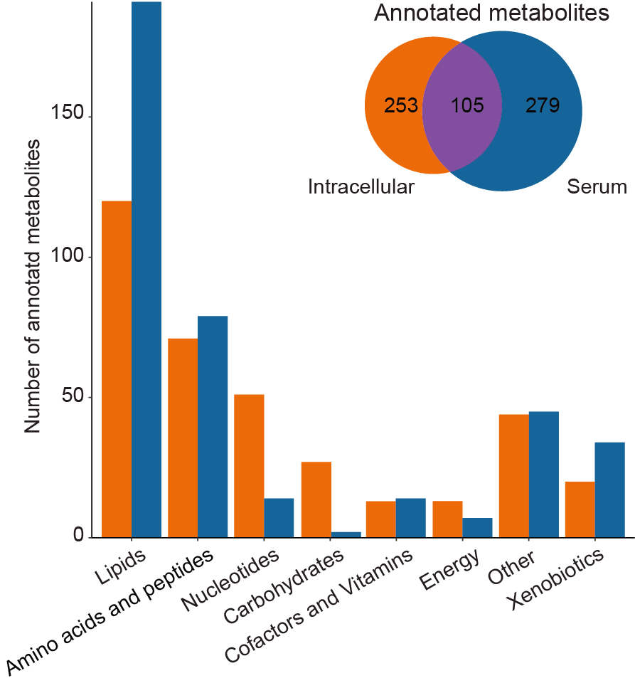
16.2 (C) Comprehensive metabolome overview
(Middle Panel) The heatmap provides a comprehensive overview of the metabolome in BCP-ALL and T-ALL patients at specified time points, further grouped by D28 status. The entire metabolome pattern is categorized into nine clusters, with significantly enriched pathways for clustered metabolites annotated on the right (P < 0.05). Each row represents a metabolite, each column corresponds to a sample, and each score reflects its relative abundance compared to HC levels, calculated as the median within each subgroup.
(Left Panel) The correlation between each cluster and clinical parameters assessed on Day 0 (D0) is displayed (P-value < 0.01).
UA: uric acid; CREA: creatine; HDL: high-density lipoprotein; PAB: Prealbumin; AST: Aspartate Aminotransferase; ALP: Alkaline Phosphatase; WBC: White Blood Cell count; TBIL: Total Bilirubin; GGT: Gamma-Glutamyl Transferase; BUN: Blood Urea Nitrogen; PLT: Platelet count; DBIL: Direct Bilirubin; TP: Total Protein; ALB: Albumin; CHOL: Cholesterol; GLU: Glucose; Hb: Hemoglobin.
library(dplyr)
library(MNet)
library(ComplexHeatmap)
library(maSigPro)
library(ggplot2)
library(ggpubr)
#-------------------------------------------------------------------------------
# Step 1: Use maSigPro for time series data analysis
#-------------------------------------------------------------------------------
sample_patient_A <- readxl::read_excel("raw_data/Supplementary Tables.xlsx",sheet=1,skip=1) %>%
as.data.frame() %>%
dplyr::filter(!is.na(METs_D0_ID)) %>%
dplyr::select(Pid,METs_D0_ID,`D28_BM MRD status`) %>%
dplyr::rename("ID"="METs_D0_ID") %>%
dplyr::mutate(type="D0")
sample_patient_C <- readxl::read_excel("raw_data/Supplementary Tables.xlsx",sheet=1,skip=1) %>%
as.data.frame() %>%
dplyr::filter(!is.na(METs_D14_ID)) %>%
dplyr::select(Pid,METs_D14_ID,`D28_BM MRD status`) %>%
dplyr::rename("ID"="METs_D14_ID") %>%
dplyr::mutate(type="D14")
sample_patient_E <- readxl::read_excel("raw_data/Supplementary Tables.xlsx",sheet=1,skip=1) %>%
as.data.frame() %>%
dplyr::filter(!is.na(METs_D28_ID)) %>%
dplyr::select(Pid,METs_D28_ID,`D28_BM MRD status`) %>%
dplyr::rename("ID"="METs_D28_ID") %>%
dplyr::mutate(type="D28")
sample_patient_Cons <- readxl::read_excel("raw_data/Supplementary Tables.xlsx",sheet=1,skip=1) %>%
as.data.frame() %>%
dplyr::filter(!is.na(METs_Cons_ID)) %>%
dplyr::select(Pid,METs_Cons_ID,`Cons_BM MRD status`) %>%
dplyr::rename("D28_BM MRD status"="Cons_BM MRD status") %>%
dplyr::filter(! `D28_BM MRD status` %in% c("NR","PR")) %>%
dplyr::filter(`D28_BM MRD status` != "CR") %>%
dplyr::rename("ID"="METs_Cons_ID") %>%
dplyr::mutate(type="Cons")
sample_patient_all <- rbind(sample_patient_A,sample_patient_C,
sample_patient_E,sample_patient_Cons) %>%
dplyr::mutate(`D28_BM MRD status`=ifelse(`D28_BM MRD status` %in% c("early death","PR","NR"),"NoCR",
`D28_BM MRD status`))
dd <- readxl::read_excel("raw_data/Supplementary Tables.xlsx",sheet=4,skip = 1) %>%
dplyr::select(Metabolite,all_of(sample_patient_all$ID)) %>%
tibble::column_to_rownames("Metabolite") %>%
log1p() %>%
as.data.frame()
dat_design <- data.frame(ID=names(dd)) %>%
dplyr::left_join(sample_patient_all,by=c("ID")) %>%
dplyr::mutate(type=ifelse(is.na(type),"HC",type)) %>%
dplyr::mutate(`D28_BM MRD status`=ifelse(is.na(`D28_BM MRD status`),"HC",`D28_BM MRD status`)) %>%
# dplyr::mutate(Control=ifelse(type=="HC",1,0)) %>%
dplyr::mutate(POS=ifelse(`D28_BM MRD status`=="POS",1,0)) %>%
dplyr::mutate(NEG=ifelse(`D28_BM MRD status`=="NEG",1,0)) %>%
dplyr::mutate(NoCR=ifelse(`D28_BM MRD status`=="NoCR",1,0)) %>%
dplyr::mutate(Time=type) %>%
dplyr::mutate(Replicate=ifelse(type=="HC",1,
ifelse(type=="D0" & `D28_BM MRD status`=="POS",2,
ifelse(type=="D0" & `D28_BM MRD status`=="NEG",3,
ifelse(type=="D0" & `D28_BM MRD status`=="NoCR",4,
ifelse(type=="D14" & `D28_BM MRD status`=="POS",5,
ifelse(type=="D14" & `D28_BM MRD status`=="NEG",6,
ifelse(type=="D14" & `D28_BM MRD status`=="NoCR",7,
ifelse(type=="D28" & `D28_BM MRD status`=="POS",8,
ifelse(type=="D28" & `D28_BM MRD status`=="NEG",9,
ifelse(type=="D28" & `D28_BM MRD status`=="NoCR",10,
ifelse(type=="Cons" & `D28_BM MRD status`=="POS",11,
ifelse(type=="Cons" & `D28_BM MRD status`=="NEG",12,
ifelse(type=="Cons" & `D28_BM MRD status`=="NoCR",13,"a"
)))))))))))))) %>%
dplyr::select(ID,Time,Replicate,NoCR,POS,NEG) %>%
tibble::column_to_rownames("ID") %>%
dplyr::mutate(Time=ifelse(Time=="HC",1,
ifelse(Time=="D0",2,
ifelse(Time=="D14",3,
ifelse(Time=="D28",4,
ifelse(Time=="Cons",5,NA)))))) %>%
as.matrix()
dat_design1=apply(dat_design,2,as.numeric)
rownames(dat_design1) <- rownames(dat_design)
dat_design <- dat_design1
dd_scale <- myscale(dd ,method="raw_zscore")
design <- make.design.matrix(dat_design, degree = 2)
set.seed(1)
fit <- p.vector(dd_scale, design, Q = 0.05, MT.adjust = "BH", min.obs = 50)
fit$i # returns the number of significant genes
fit$alfa # gives p-value at the Q false discovery control level
## 4. Difference Analysis
set.seed(1)
tstep <- T.fit(fit, step.method = "backward", alfa = 0.05)
## 5. Extract differentially expressed genes
set.seed(1)
sigs <- get.siggenes(tstep, rsq = 0.05, vars = "all")
#suma2Venn(sigs$summary[, c(1:3)])
#suma2Venn(sigs$summary[, c(1:4)])
pdf("result/Figure1/1C.all_0.05.pdf")
a <- see.genes(sigs$sig.genes, edesign=design$edesign,show.fit = T, dis =design$dis,
cluster.method="hclust" ,cluster.data = 1, k.mclust=TRUE)
dev.off()
write.table(data.frame(nn=a$cut),"result/Figure1/1C.all_0.05.txt",quote=F,sep="\t")
#-------------------------------------------------------------------------------
# Step 2: The comprehensive metabolome overview of BCP-ALL/T-ALL patients at denoted time points and further grouped by D28 status
#-------------------------------------------------------------------------------
mark_meta <- "Taurocholic acid"
sample_patient_all <- rbind(sample_patient_A,sample_patient_C,
sample_patient_E,sample_patient_Cons) %>%
dplyr::mutate(`D28_BM MRD status`=ifelse(`D28_BM MRD status` %in% c("early death","PR","NR"),"NoCR",
`D28_BM MRD status`)) %>%
dplyr::arrange(`D28_BM MRD status`)
met <- data.table::fread("result/Figure1/1C.all_0.05.txt") %>%
as.data.frame()
dd <- readxl::read_excel("raw_data/Supplementary Tables.xlsx",sheet=4,skip = 1) %>%
dplyr::select(Metabolite,starts_with("H"),all_of(sample_patient_all$ID)) %>%
dplyr::filter(Metabolite %in% met$V1) %>%
dplyr::arrange(match(Metabolite,met$V1)) %>%
tibble::column_to_rownames("Metabolite") %>%
log1p() %>%
as.data.frame() %>%
tibble::rownames_to_column(var="Metabolite")
sample_all <- data.frame(ID=names(dd)) %>%
dplyr::filter(ID != "Metabolite") %>%
dplyr::left_join(sample_patient_all,by="ID") %>%
dplyr::mutate(type=ifelse(is.na(type),"HC",type)) %>%
dplyr::mutate(`D28_BM MRD status`=ifelse(is.na(`D28_BM MRD status`),"HC",`D28_BM MRD status`))
dd_melt <- reshape2::melt(dd,id="Metabolite") %>%
dplyr::left_join(sample_all,by=c("variable"="ID"))
dd_median <- dd_melt %>%
dplyr::group_by(Metabolite,`D28_BM MRD status`, type) %>%
dplyr::summarise(n=median(value)) %>%
as.data.frame() %>%
dplyr::mutate(a=paste0(`D28_BM MRD status`,"_",type)) %>%
dplyr::select(Metabolite,a,n)
dd_dcast <- reshape2::dcast(dd_median,Metabolite~a) %>%
dplyr::arrange(match(Metabolite,met$V1)) %>%
tibble::column_to_rownames("Metabolite")
dd_scale <- log2(dd_dcast/dd_dcast$HC_HC) %>%
dplyr::select(-HC_HC)
sample_all <- data.frame(ID=names(dd_scale)) %>%
dplyr::mutate(a=ID) %>%
tidyr::separate(ID,sep="_",c("status","type")) %>%
dplyr::mutate(status=ifelse(status=="NEG","MRD-",
ifelse(status=="POS","MRD+",status))) %>%
dplyr::arrange(match(status,c("HC","MRD-","MRD+","NoCR")))
dd_result <- dd_scale %>%
dplyr::select(sample_all$a)
overlap_met <- intersect(stringr::str_to_title(mark_meta),stringr::str_to_title(rownames(dd_result)))
gene_pos <- as.numeric()
for (i in 1:length(overlap_met)) {
gene_pos_temp <- which(stringr::str_to_title(rownames(dd_result)) == overlap_met[i])
gene_pos <- c(gene_pos,gene_pos_temp)
}
length(gene_pos)
setdiff(stringr::str_to_title(overlap_met),stringr::str_to_title(rownames(dd_result)))
right_anno <- rowAnnotation(mark_gene = anno_mark(at = gene_pos,
labels = overlap_met,
labels_gp = gpar(fontsize = 5)))
top_annotation = HeatmapAnnotation(
Type=sample_all$type,
status=sample_all$`status`,
col=list(`Type`=c("D0"="#D01910","D14"="#FE7F2D","D28"="#006633","Cons"="#330066"),
status=c("MRD-"="#00468BFF","MRD+"="#0099B4FF","NoCR"="#AD002AFF")))
col_fun = circlize::colorRamp2(c(-0.3, 0, 0.3), c("#00599F", "white", "#D01910"))
p_metabolite <- Heatmap(dd_result,height=unit(12,"cm"),name="Serum Metabolite",
cluster_row_slices = F,border=T,
cluster_column_slices = F,
clustering_method_rows = "ward.D",
cluster_columns = F,right_annotation = right_anno,
# clustering_method_columns = "ward.D2",
column_split = factor(sample_all$type,levels=c("D0","D14","D28","Cons")),
row_split = met$nn,
col = col_fun,
top_annotation =top_annotation,
show_column_names = F,show_row_names = T,
row_names_gp = gpar(fontsize = 2),column_names_gp = gpar(fontsize = 3))
pdf("result/Figure1/1C.heatmap-haveHC-0.05-final.pdf",width = 10,height = 8)
p_metabolite
dev.off()
#-------------------------------------------------------------------------------
# Step 3: Enriched pathways for clustered metabolites
#-------------------------------------------------------------------------------
kid <- readxl::read_excel("raw_data/Supplementary Tables.xlsx",sheet=6,skip=1) %>%
as.data.frame() %>%
dplyr::select(Refmet_name,Library,`Annotated category`,`KEGG ID`)
dd <- data.table::fread("result/Figure1/1C.all_0.05.txt") %>%
as.data.frame() %>%
dplyr::left_join(kid,by=c("V1"="Refmet_name")) %>%
dplyr::filter(`KEGG ID` != "None")
pathway_result <- data.frame()
for (i in 1:9) {
dd_1 <- dd %>%
dplyr::filter(nn==i) %>%
dplyr::distinct(`KEGG ID`,.keep_all = T)
dd_1_result <- ePEAlyser(dd_1$`KEGG ID`,out="metabolite",
p_cutoff = 0.05,noverlap_cutoff = 1,test = "hypergeo")
dd_1_result_mutate <- dd_1_result$output %>%
dplyr::mutate(group=paste0("C",i))
pathway_result <- rbind(pathway_result,dd_1_result_mutate)
}
pathway_result1 <- pathway_result %>%
dplyr::mutate(pvalue=ifelse(pvalue < 8.9e-08,8.9e-08,pvalue)) %>%
dplyr::arrange(desc(pvalue)) %>%
dplyr::mutate(name=factor(name,levels=unique(name)))
p1 <- ggplot(pathway_result1,aes(x=name,y=factor(1)))+
geom_point(aes(size=nOverlap,color=-log10(pvalue)))+
scale_x_discrete(position = "top")+
scale_color_gradient(low="yellow",high="red")+
coord_flip()+
facet_grid(group~.,scales = "free",space="free",switch="y")+
theme_bw()+
theme(panel.grid = element_blank(),axis.text.x=element_blank(),axis.ticks.x = element_blank())+
labs(x=NULL,y=NULL)
ggsave("result/Figure1/1C.pathway_all.pdf",p1,width=5.5,height = 7.5)
#-------------------------------------------------------------------------------
# Step 4: The correlation between each cluster with clinical parameters
#-------------------------------------------------------------------------------
AH.var <- c("Hb", "PLT", "GLU.mM", "PAB.mg.L",
"ALT.U.L", "AST.U.L", "ALP.IU.L", "GGT.IU.L", "TBIL.uM", "DBIL.uM",
"TP.g.L", "ALB.g.L", "A.G", "TBA.uM", "BUN.mM", "CREA.uM", "UA.μM",
"TG.B.mM", "CHOL.mM", "HDL.mM", "LDL.mM")
clin_index <- readxl::read_excel("raw_data/05 2019ALL代谢组收样临床资料v0606.xlsx",sheet = "initial") %>%
dplyr::distinct(bianhao,.keep_all = T) %>%
dplyr::select(bianhao_new,all_of(AH.var)) %>%
unique() %>%
dplyr::mutate(Pid=paste0("RJ-",bianhao_new)) %>%
dplyr::select(-bianhao_new) %>%
dplyr::mutate(CHOL.mM=as.numeric(CHOL.mM)) %>%
dplyr::mutate(HDL.mM=as.numeric(HDL.mM))
sample_patient_A <- readxl::read_excel("raw_data/Supplementary Tables.xlsx",sheet=1,skip=1) %>%
as.data.frame() %>%
dplyr::filter(!is.na(METs_D0_ID)) %>%
dplyr::left_join(clin_index,by="Pid") %>%
dplyr::select(Pid,METs_D0_ID,Lineage,Subtype,Age,WBC,
BMI,HBP,OS_stat,OS,EFS_stat,EFS,RFS_stat,RFS,
all_of(AH.var)) %>%
dplyr::mutate(OS=OS/30,OS_status=OS_stat,
RFS=RFS/30,RFS_status=RFS_stat,
EFS=EFS/30,EFS_status=EFS_stat)
for (n in 1:9) {
a <- data.table::fread("result/Figure1/1C.all_0.05.txt") %>%
as.data.frame() %>%
dplyr::filter(nn==n)
dd <- readxl::read_excel("raw_data/Supplementary Tables.xlsx",sheet=4,skip = 1) %>%
dplyr::select(Metabolite,all_of(sample_patient_A$METs_D0_ID)) %>%
dplyr::filter(Metabolite %in% a$V1) %>%
tibble::column_to_rownames("Metabolite") %>%
log1p() %>%
as.data.frame()
module.name <- rownames(dd)
plot.name <- c("Age","BMI","WBC",AH.var)
plot.name[! plot.name %in% colnames(sample_patient_A)]
plot.info.cat <- NULL
for (kkk in 1:length(plot.name)) {
print(kkk)
plot.data <- sample_patient_A
plot.data$Plot <- plot.data[, which(colnames(plot.data) == plot.name[kkk])]
plot.data <- plot.data[which(!is.na(plot.data$Plot)), ]
plot.info.cat.sub <- NULL
for (i in 1:length(module.name)) {
plot.data$ME_score <- dd[module.name[i], plot.data$METs_D0_ID] %>% as.numeric()
sub <- c(module.name[i], plot.name[kkk], cor(plot.data$ME_score, plot.data$Plot, method = "spearman"),
cor.test(plot.data$ME_score, plot.data$Plot, method = "spearman")$p.value, "Spearman's correlation")
plot.info.cat.sub <- rbind(plot.info.cat.sub, sub)
}
plot.info.cat.sub <- as.data.frame(plot.info.cat.sub)
colnames(plot.info.cat.sub) <- c("Module", "Factor", "Type","P", "Test")
plot.info.cat.sub <- plot.info.cat.sub %>%
mutate(Type=as.numeric(Type),
P=as.numeric(P),
Padj=p.adjust(P,method="fdr"))
plot.info.cat <- rbind(plot.info.cat, plot.info.cat.sub)
}
plot.info.cat <- plot.info.cat %>%
mutate(Tag=case_when(Type<0&P<0.01 ~ "Negative",
Type>0&P<0.01 ~ "Positive",
.default="notSig" ))
AH.var1=strsplit(AH.var,"[.]")
AH.result <- c()
for (i in 1:length(AH.var1)){
AH.result <- c(AH.result,AH.var1[[i]][1])
}
plot.info <- plot.info.cat
plot.info <- plot.info %>%
tidyr::separate(Factor,sep="[.]","Factor") %>%
#dplyr::mutate(Factor=ifelse(Factor=="A","AG",Factor))
dplyr::mutate(LogP=-log10(P),
Module=factor(as.character(Module)),
Factor=factor(as.character(Factor), levels = c("OS","EFS","RFS",
"Age","BMI","WBC",AH.result,
"Gender","HBP","Lineage","Subtype","d28CR")))
write.table(plot.info %>% dplyr::mutate(group=paste0("C",n)),paste0("result/Figure1/1C.maSigPro/cluster",n,".txt"),quote=F,row.names=F,sep="\t")
p <- ggplot(plot.info, aes(Factor, Module)) +
geom_point(aes(size = LogP, colour = Tag, fill = Tag), shape = 16) +
xlab("") + ylab("")
p <- p + ggthemes::theme_base() + scale_size(range = c(0,10))
p <- p + theme(axis.text.x = element_text(angle = 90, hjust = 1, vjust = 0.5, size = 15))
p <- p + theme(axis.text.y = element_text(size = 5))
p <- p + scale_colour_manual(values = c(Favorable = "#00599F", Unfavorable = "#D01910",
Negative = "#009632", Positive = "#8f00b7", Sig = "#ed7a00", Basal = "#ea6c59", Classical = "#1288a5", notSig = "#CCCCCC")) +
theme(plot.background = element_blank())
ggsave(paste0("result/Figure1/1C.maSigPro/cluster",n,"_clinical.pdf"),p,width=12,height = 8)
}
a_result <- data.frame()
for (i in 1:9) {
a <- data.table::fread(paste0("result/Figure1/1C.maSigPro/cluster",i,".txt")) %>%
as.data.frame()
a_count <- a %>%
dplyr::filter(P < 0.01) %>%
dplyr::group_by(Factor) %>%
dplyr::summarise(n=n()) %>%
dplyr::filter(n > length(unique(a$Module))/3)
if (i >= 8) {
a_filter <- a %>%
as.data.frame() %>%
dplyr::filter(Tag != "notSig" | Factor == "CHOL") %>%
dplyr::filter(Factor %in% c(a_count$Factor,"CHOL")) %>%
dplyr::arrange(P) %>%
dplyr::select(P,Factor,group,Tag) %>%
dplyr::distinct(Factor,.keep_all = T)
}else {
a_filter <- a %>%
as.data.frame() %>%
dplyr::filter(Tag != "notSig") %>%
dplyr::filter(Factor %in% c(a_count$Factor)) %>%
dplyr::arrange(P) %>%
dplyr::select(P,Factor,group,Tag) %>%
dplyr::distinct(Factor,.keep_all = T)
}
a_result <- rbind(a_result,a_filter)
}
a_result <- a_result %>%
dplyr::mutate(P=ifelse(P < 1.401873e-14,1.401873e-14,P)) %>%
dplyr::arrange(desc(P)) %>%
dplyr::mutate(Factor=factor(Factor,levels=unique(Factor)))
p1 <- ggplot(a_result,aes(x=Factor,y=factor(1)))+
geom_point(aes(size=-log10(P),color=Tag))+
scale_color_manual(values=c(Negative = "#009632", Positive = "#8f00b7"))+
coord_flip()+
facet_grid(group~.,scales = "free",space="free",switch="x")+
theme_bw()+
theme(panel.grid = element_blank(),axis.text.x=element_blank(),axis.ticks.x = element_blank())+
labs(x=NULL,y=NULL)
ggsave("result/Figure1/1C.clinical_all-v1022.pdf",p1,width=2.5,height = 8.5)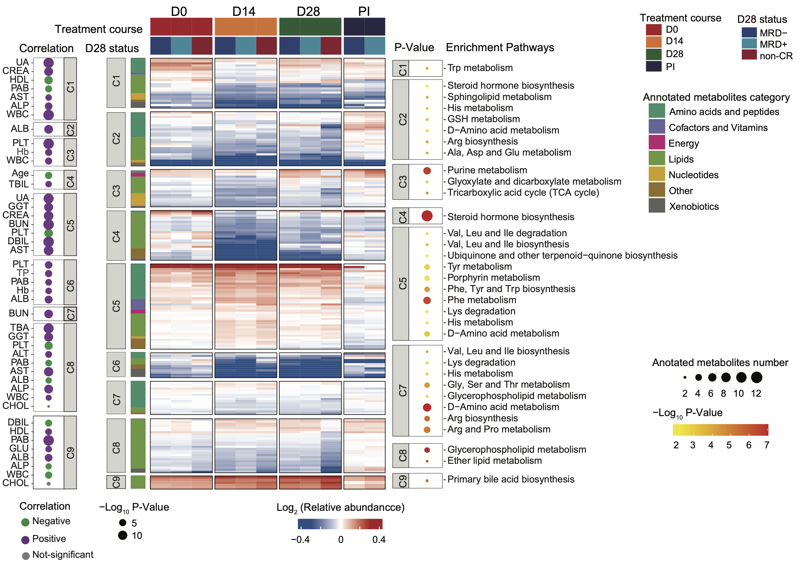
16.3 (S1 A) Clinical characteristics
Clinical characteristics of all involved ALL patients. Age >=65: aged, 40~64 middle age, 15~39: AYA (adolescent and young adult); BMI (body mass index) <18.5: underweight, 18.5~23.9: normal, 24~27.9: overweight, >= 28: fat. HBP is blood pressure over 140/90 mmHg; BM blasts and PB blasts are represented by blasts cells percentage in BM and PB, respectively.
library(dplyr)
library(ggplot2)
#-------------------------------------------------------------------------------
# Step 1: Load clinical data and set parameters
#-------------------------------------------------------------------------------
dat_sample <- readxl::read_excel("raw_data/sample_clinical_201_info.xlsx") %>%
as.data.frame()
## Clinical characteristics
dat <- dat_sample %>%
dplyr::mutate(BMI_Type = ifelse(BMI < 18.5,"Underweight",
ifelse(BMI >= 18.5 & BMI < 24,"Normal",
ifelse(BMI >= 24 & BMI < 28,"Overweight",
ifelse(BMI >= 28,"Fat",NA))))) %>%
dplyr::mutate(Age_Type = ifelse(Age >= 65,"Aged",
ifelse(Age >= 40 & Age < 65,"Middle",
ifelse(Age < 40 & Age >= 15,"AYA",NA)))) %>%
dplyr::mutate(BM_Blast=as.numeric(BM_Blast)) %>%
dplyr::mutate(PB_Blast=as.numeric(PB_Blast)) %>%
dplyr::mutate(BM_Blast_Type=ifelse(BM_Blast >= 90,">90%",
ifelse(BM_Blast >= 20 & BM_Blast < 90,"20%~90%",
ifelse(BM_Blast < 20,"<20%",NA)))) %>%
dplyr::mutate(PB_Blast_Type=ifelse(PB_Blast >= 90,"high",
ifelse(PB_Blast < 90,"low",NA))) %>%
dplyr::rename("Sex" = "Gender") %>%
dplyr::select(Pid,Lineage,BMI_Type,Age_Type,Sex,HBP,BM_Blast_Type,PB_Blast_Type)
dat_melt <- reshape2::melt(dat,id=c("Pid","Lineage")) %>%
dplyr::group_by(Lineage,variable,value) %>%
dplyr::summarise(n=n()) %>%
dplyr::mutate(vv=paste0(value," (",n,")")) %>%
dplyr::mutate(n=ifelse(Lineage=="T",-n,n)) %>%
dplyr::mutate(value=factor(value,levels=c("Fat","Overweight","Normal","Underweight","Aged","Middle","AYA","M","F","N","Y","20%~90%","<20%",">90%","low","high")))
#-------------------------------------------------------------------------------
# Step 2: Visualization
#-------------------------------------------------------------------------------
p <- ggplot(dat_melt,aes(variable,n,fill=value))+
geom_bar(stat="identity",width=.7)+
geom_text(aes(label=vv),size=2,position = position_stack(vjust=0.5))+
theme_bw()+
theme(panel.border = element_blank(),panel.grid.major = element_blank(),
panel.grid.minor = element_blank(),
axis.line = element_line(colour = "black"))+
scale_fill_manual(values=c("Underweight"="#FDBF6F","Normal"="#00C1E3", "Overweight"="#FD6AB0","Fat"="#E5E059","Aged"="#E5E059","Middle"="#00C1E3","AYA"="#FD6AB0","M"="#00C1E3","F"="#FD6AB0","N"="#00C1E3","Y"="#FD6AB0","20%~90%"="#E5E059",">90%"="#FD6AB0","<20%"="#00C1E3","low"="#00C1E3","high"="#FD6AB0","normal"="#E5E059"))+
geom_hline(yintercept=c(0), linetype = 'solid')+
coord_flip()
ggsave("result/Figure1/S1A_ClinicalCharacteristics.pdf",p,width=20,height = 8)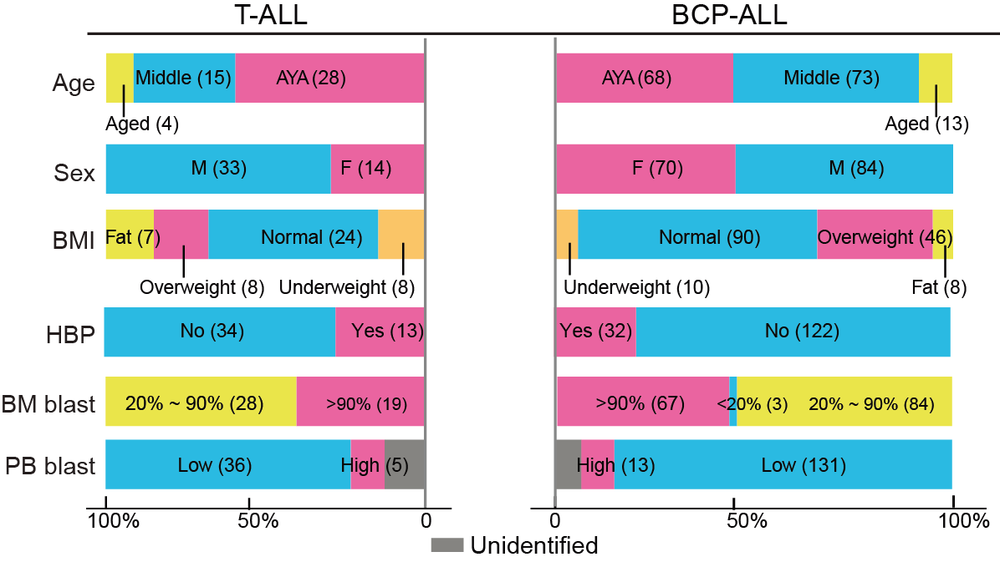
16.4 (S1 B) Venn plot
The Venn plot of all primary cases involved in each omics study.
library(dplyr)
library(VennDiagram)
#-------------------------------------------------------------------------------
# Step 1: Load data and set parameters
#-------------------------------------------------------------------------------
dat <- readxl::read_excel("raw_data/sample_clinical_201_info.xlsx") %>%
as.data.frame()
## serum
dat_serum <- dat
## cell
dat_cell <- dat %>%
dplyr::filter(!is.na(METc_BM_D0_ID)|!is.na(`METc_BM_MRD-_ID`)|!is.na(METc_PB_D0_ID))
## RNA_seq
dat_RNA <- dat %>%
dplyr::filter(!is.na(RNA_ID))
#-------------------------------------------------------------------------------
# Step 2: Venn Diagram
#-------------------------------------------------------------------------------
venn.plot <- venn.diagram(
x = list(
Serum = dat_serum$Pid,
Cell = dat_cell$Pid,
RNA = dat_RNA$Pid
),
filename = NULL,
col = "transparent",
fill = c("#E6AB02", "#1F78B4", "#E7298A"),
alpha = 0.5,
label.col = c("black", "black", "black", "black",
"black", "black", "black"),
cex = 2.5,
fontfamily = "serif",
fontface = "bold",
cat.default.pos = "text",
cat.col = c("black", "black", "black"),
cat.cex = 2.5,
cat.fontfamily = "serif",
cat.dist = c(0.06, 0.06, 0.03),
cat.pos = 0
)
pdf("result/Figure1/S1B_Venn.pdf",width=10,height = 10)
grid.draw(venn.plot)
dev.off()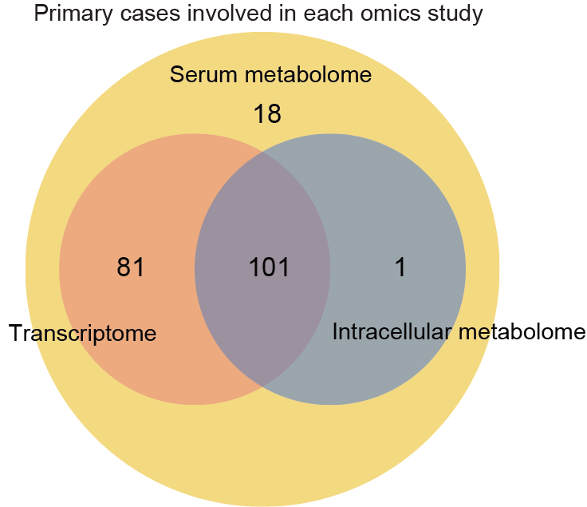
16.5 (S1 C) Waterfall plot
Left, the waterfall plot of genetic alterations in each ALL patients. The upper panel represents mutation events, the middle panel indicates the expression of Ik6 transcripts and the lower panel corresponds to fusion/rearrangement events. Right, the upper boxplots represent the alteration frequencies of gene sequence variations in each case, and the types of mutations of indicated genes. The lower boxplot shows the number of gene fusion/rearrangement events in this series. The genetic alterations were mainly detected by RNA-seq while Ik6 transcripts were identified by RT-PCR (For details, see Methods).
library(dplyr)
library(ComplexHeatmap)
#-------------------------------------------------------------------------------
# Step 1: Load data and filter genetic alterations
#-------------------------------------------------------------------------------
dd <- readxl::read_excel("raw_data/sample_clinical_201_info.xlsx") %>%
as.data.frame() %>%
dplyr::filter(!is.na(RNA_ID)) %>%
dplyr::select(Pid,Lineage,RNA_id_raw) %>%
dplyr::rename("RNA_id"="RNA_id_raw","Subtype"="Lineage")
## Fusion
fusion_T <- readxl::read_excel("raw_data/fusion_T_v0803.xlsx",skip=1) %>%
as.data.frame() %>%
dplyr::select(RNA_id,final_check) %>%
dplyr::filter(!is.na(final_check)) %>%
tidyr::separate_rows(final_check,sep=";")
fusion_B <- readxl::read_excel("raw_data/fusion_B_v0803.xlsx",skip=1) %>%
as.data.frame() %>%
dplyr::select(RNA_id,fusion_group) %>%
dplyr::filter(!is.na(fusion_group)) %>%
tidyr::separate_rows(fusion_group,sep=";") %>%
dplyr::rename("final_check"="fusion_group")
fusion <- rbind(fusion_T,fusion_B) %>%
dplyr::filter(RNA_id %in% dd$RNA_id) %>%
dplyr::arrange(match(RNA_id,dd$RNA_id))
## Mutation
mutation_T <- data.table::fread("raw_data/mutation_T_v1114_all.txt") %>%
as.data.frame() %>%
dplyr::select(V2,V17,V19) %>%
dplyr::rename("ID"="V2","Gene.refGene"="V17","ExonicFunc.refGene"="V19") %>%
dplyr::select(ID,`Gene.refGene`,`ExonicFunc.refGene`) %>%
dplyr::mutate(`ExonicFunc.refGene`=
ifelse(`ExonicFunc.refGene` %in% c("frameshift deletion","frameshift insertion","frameshift substitution"),"Frameshift",
ifelse(`ExonicFunc.refGene` %in% c("nonframeshift deletion","nonframeshift insertion","nonframeshift substitution"),"Nonframeshift",
ifelse(`ExonicFunc.refGene` %in% ".","Splice",
ifelse(`ExonicFunc.refGene` %in% "nonsynonymous SNV","Missense", ifelse(`ExonicFunc.refGene`=="startloss","Startloss",
ifelse(`ExonicFunc.refGene`=="stopgain","Stopgain",
ifelse(`ExonicFunc.refGene`=="synonymous SNV","Silent",`ExonicFunc.refGene`)))))))) %>%
unique() %>%
dplyr::mutate(`Gene.refGene` = ifelse(`Gene.refGene` %in% c("IDH1","IDH2"),"IDH1/2",`Gene.refGene`)) %>%
dplyr::group_by(Gene.refGene)
mutation_B <- data.table::fread("raw_data/mutation_B_v1114_all.txt") %>%
as.data.frame() %>%
dplyr::select(V2,V17,V19) %>%
dplyr::rename("ID"="V2","Gene.refGene"="V17","ExonicFunc.refGene"="V19") %>%
dplyr::select(ID,`Gene.refGene`,`ExonicFunc.refGene`) %>%
dplyr::mutate(`ExonicFunc.refGene`=
ifelse(`ExonicFunc.refGene` %in% c("frameshift deletion","frameshift insertion","frameshift substitution"),"Frameshift",
ifelse(`ExonicFunc.refGene` %in% c("nonframeshift deletion","nonframeshift insertion","nonframeshift substitution"),"Nonframeshift",
ifelse(`ExonicFunc.refGene` %in% ".","Splice",
ifelse(`ExonicFunc.refGene` %in% "nonsynonymous SNV","Missense",
ifelse(`ExonicFunc.refGene`=="startloss","Startloss",
ifelse(`ExonicFunc.refGene`=="stopgain","Stopgain",
ifelse(`ExonicFunc.refGene`=="synonymous SNV","Silent",`ExonicFunc.refGene`)))))))) %>%
unique() %>%
dplyr::mutate(`Gene.refGene` = ifelse(`Gene.refGene` %in% c("IDH1","IDH2"),"IDH1/2",`Gene.refGene`)) %>%
dplyr::group_by(Gene.refGene)
mutation <- rbind(mutation_T,mutation_B) %>%
dplyr::filter(ID %in% dd$RNA_id) %>%
dplyr::arrange(match(ID,dd$RNA_id)) %>%
as.data.frame()
#-------------------------------------------------------------------------------
# Step 2: Set sample order and set parameters
#-------------------------------------------------------------------------------
## Set sample order
sample_order <- mutation %>%
dplyr::full_join(fusion,by=c("ID"="RNA_id")) %>%
dplyr::right_join(dd,by=c("ID"="RNA_id")) %>%
dplyr::arrange(match(Gene.refGene,c("NOTCH1","KMT2C","NRAS","RUNX1","SETD2","CTCF","DNMT3A","ETV6","FLT3","IDH1/2","KMT2D","PHF6","KMT2A","PAX5","TP53","JAK3","NCOR2","SUZ12","ARID1B","ATRX","IKZF1","KRAS","PTEN","EP300","SETD1B","ASXL1","ARID1A","NF1","JAK1","MGA","PTPN11","SACS","SH2B3","STAT5B","TET2"))) %>%
dplyr::arrange(match(final_check,c("BCR-ABL1","ZNF384 fusion","DUX4 rearrangement","TCF3-PBX1","KMT2A rearrangement","PAX5-ETV6","MEF2D rearrangement","BCL2/MYC","MLLT10 rearrangement","SET-NUP214","STIL-TAL1"))) %>%
dplyr::arrange(match(Subtype,c("B","T"))) %>%
dplyr::distinct(ID,.keep_all = T) %>%
dplyr::mutate(Lineage=ifelse(Subtype=="B","BCP-ALL",
ifelse(Subtype=="T","T-ALL",Subtype)))
## Ik6
Ik6 <- readxl::read_excel("raw_data/Sample_RNA_190_fusion_mutation_v1130.xlsx") %>%
dplyr::filter(RNA_id %in% dd$RNA_id) %>%
dplyr::select(RNA_id,`备注...20`) %>%
dplyr::arrange(match(RNA_id,sample_order$RNA_id)) %>%
dplyr::mutate(Ik6=ifelse(is.na(`备注...20`),"no",
ifelse(`备注...20` %in% c("发现TLX1基因表达","发现TLX3基因表达","发现IKZF1基因Ik8转录本"),"no","yes")))
## Fusion
clinical_fusion_dcast <- reshape2::dcast(fusion,RNA_id ~ final_check) %>%
dplyr::right_join(dd,by=c("RNA_id")) %>%
dplyr::select(-Pid,-Subtype) %>%
tibble::column_to_rownames("RNA_id") %>%
dplyr::arrange(`STIL-TAL1`) %>%
dplyr::arrange(`SET-NUP214`) %>%
dplyr::arrange(`MLLT10 rearrangement`) %>%
dplyr::arrange(`BCL2/MYC`) %>%
dplyr::arrange(`MEF2D rearrangement`) %>%
dplyr::arrange(`PAX5-ETV6`) %>%
dplyr::arrange(`KMT2A rearrangement`) %>%
dplyr::arrange(`TCF3-PBX1`) %>%
dplyr::arrange(`DUX4 rearrangement`) %>%
dplyr::arrange(`ZNF384 fusion`) %>%
dplyr::arrange(`BCR-ABL1`)
clinical_fusion_dcast[is.na(clinical_fusion_dcast)] <- 0
clinical_fusion_dcast[clinical_fusion_dcast != 0] <- 1
d_fusion <- t(clinical_fusion_dcast) %>%
as.data.frame() %>%
tibble::rownames_to_column(var="fusion") %>%
dplyr::arrange(match(fusion,c("BCR-ABL1","ZNF384 fusion","DUX4 rearrangement","TCF3-PBX1","KMT2A rearrangement","PAX5-ETV6","MEF2D rearrangement","BCL2/MYC","MLLT10 rearrangement","SET-NUP214","STIL-TAL1"))) %>%
dplyr::filter(fusion %in% c("BCR-ABL1","ZNF384 fusion","DUX4 rearrangement","TCF3-PBX1","KMT2A Group","PAX5-ETV6","MEF2D rearrangement","BCL2/MYC","MLLT10 rearrangement","SET-NUP214","STIL-TAL1","KMT2A rearrangement")) %>%
tibble::column_to_rownames("fusion") %>%
dplyr::select(unique(sample_order$ID)) %>%
dplyr::mutate_if(is.character,as.numeric)
d_fusion_temp <- t(d_fusion)
d_fusion_temp[d_fusion_temp!=0] <- 1
num=colSums(d_fusion_temp)
rownames(d_fusion) <- paste0(rownames(d_fusion)," (n=",num,")")
#-------------------------------------------------------------------------------
# Step 3: Waterfall Plot
#-------------------------------------------------------------------------------
## Right annotation fusion
d <- d_fusion %>%
tibble::rownames_to_column(var="fusion")
d_fusion_melt <- reshape2::melt(d) %>%
dplyr::group_by(fusion,value) %>%
dplyr::summarise(n=n()) %>%
dplyr::filter(value != 0) %>%
dplyr::rename("number"="value") %>%
dplyr::rename("value"="n")
d_fusion_dcast <- reshape2::dcast(d_fusion_melt,fusion ~ number) %>%
dplyr::arrange(match(fusion,rownames(d_fusion))) %>%
tibble::column_to_rownames("fusion")
d_fusion_dcast[is.na(d_fusion_dcast)] <- 0
right_annotation_fusion <- rowAnnotation(freq=anno_barplot(100*d_fusion_dcast/182,
gp=gpar(fill=c("#005B1D"),col=NA),width = unit(2, "cm")))
fusion_annotation <- Heatmap(
d_fusion,right_annotation = right_annotation_fusion,
rect_gp = gpar(col = "gray", lwd = 2),
col=c("#EEEEEE","#444444"),
height=unit(6,"cm"),border = TRUE,
cluster_columns = F,cluster_rows = F,column_title = NULL,
show_column_names = F,
row_names_gp = gpar(fontsize = 10),column_names_gp=gpar(fontsize=6))
## IK6
d_ik6 <- Ik6 %>%
dplyr::select(RNA_id,Ik6) %>%
tibble::column_to_rownames("RNA_id") %>%
t() %>%
as.data.frame() %>%
dplyr::select(names(d_fusion))
ik6_annotation <- Heatmap(
d_ik6,height=unit(2,"cm"),border=TRUE,
rect_gp = gpar(col = "gray", lwd = 2),
col=c("#EEEEEE","#EA644C"))
### Mutation
hit_num <- mutation %>%
dplyr::group_by(ID,`Gene.refGene`) %>%
dplyr::summarise(n=n()) %>%
dplyr::filter(n>1)
mutation <- mutation %>%
dplyr::left_join(hit_num,by=c("ID","Gene.refGene")) %>%
dplyr::mutate(`ExonicFunc.refGene`=ifelse(!is.na(n),"Multiple",`ExonicFunc.refGene`)) %>%
dplyr::select(-n) %>%
unique() %>%
dplyr::rename("RNA_id"="ID") %>%
dplyr::arrange(match(Gene.refGene,c("NOTCH1","KMT2C","NRAS","RUNX1","SETD2","CTCF","DNMT3A","ETV6","FLT3","IDH1/2","KMT2D","PHF6","KMT2A","PAX5","TP53","JAK3","NCOR2","SUZ12","ARID1B","ATRX","IKZF1","KRAS","PTEN","EP300","SETD1B","ASXL1","ARID1A","NF1","JAK1","MGA","PTPN11","SACS","SH2B3","STAT5B","TET2")))
mutation_gene_filter <- mutation %>%
dplyr::select(RNA_id,Gene.refGene) %>%
unique() %>%
dplyr::group_by(`Gene.refGene`) %>%
dplyr::summarise(n=n()) %>%
dplyr::filter(n>4)
mutation_sort <- rev(names(sort(table(mutation %>% filter(`Gene.refGene` %in% mutation_gene_filter$Gene.refGene) %>% pull(Gene.refGene)))))
mutation <- mutation %>%
dplyr::filter(`Gene.refGene` %in% mutation_gene_filter$Gene.refGene) %>%
as.data.frame() %>%
dplyr::distinct(RNA_id,Gene.refGene,.keep_all = T)
mutation_dcast <- reshape2::dcast(mutation,RNA_id ~ `Gene.refGene`) %>%
dplyr::right_join(sample_order,by=c("RNA_id"="ID")) %>%
tibble::column_to_rownames("RNA_id") %>%
dplyr::select(all_of(mutation_sort))
mutation_dcast[is.na(mutation_dcast)] <- 0
mutation_dcast[mutation_dcast=="Missense"] <- 1
mutation_dcast[mutation_dcast=="Frameshift"] <- 2
mutation_dcast[mutation_dcast=="Nonframeshift"] <- 3
mutation_dcast[mutation_dcast=="Silent"] <- 4
mutation_dcast[mutation_dcast=="Splice"] <- 5
mutation_dcast[mutation_dcast=="Stopgain"] <- 6
mutation_dcast[mutation_dcast=="Multiple"] <- 7
mutation_dcast1 <- mutation_dcast %>%
dplyr::mutate_if(is.character,as.numeric) %>%
rowwise() %>%
dplyr::select(c("NOTCH1","NRAS","SETD2","ETV6","RUNX1",
"PHF6","KMT2D","PAX5","IDH1/2","TP53","JAK3",
"SUZ12","DNMT3A","IKZF1","KRAS",
"EP300","SETD1B","NCOR2","FLT3","ARID1B","ASXL1","ARID1A",
"NF1","JAK1","SH2B3","TET2","MGA","PTPN11","PTEN","SACS",
"STAT5B"),everything()) %>%
as.data.frame()
rownames(mutation_dcast1) <- rownames(mutation_dcast)
mutation_dcast <- mutation_dcast1
mutation_dcast_temp <- mutation_dcast
mutation_dcast_temp[mutation_dcast_temp!=0] <- 1
num=colSums(mutation_dcast_temp)
names(mutation_dcast) <- paste0(names(mutation_dcast)," (n=",num,")")
d_mutation <- t(mutation_dcast) %>%
as.data.frame() %>%
dplyr::select(sample_order$ID)
## Right annotation
d <- d_mutation %>%
tibble::rownames_to_column(var="mutation")
d_mutation_melt <- reshape2::melt(d) %>%
dplyr::group_by(mutation,value) %>%
dplyr::summarise(n=n()) %>%
dplyr::filter(value != 0) %>%
dplyr::rename("number"="value") %>%
dplyr::rename("value"="n")
d_mutation_dcast <- reshape2::dcast(d_mutation_melt,mutation ~ number) %>%
dplyr::arrange(match(mutation,rownames(d_mutation))) %>%
tibble::column_to_rownames("mutation")
d_mutation_dcast[is.na(d_mutation_dcast)] <- 0
right_annotation <- rowAnnotation(
freq=anno_barplot(100*d_mutation_dcast/182,
gp=gpar(fill=c("#3987CC","#DB3D3D","#663FFB","#FF7F0E","#CC66FF","#8B564C","#339933"),col=NA),
width = unit(2, "cm")))
## Top annotation
d_mutation_melt_col <- reshape2::melt(d) %>%
dplyr::group_by(variable,value) %>%
dplyr::summarise(n=n()) %>%
dplyr::rename("number"="value") %>%
dplyr::rename("value"="n")
d_mutation_dcast_col <- reshape2::dcast(d_mutation_melt_col,variable ~ number) %>%
dplyr::arrange(match(variable,colnames(d_mutation))) %>%
tibble::column_to_rownames("variable") %>%
dplyr::select(-`0`)
d_mutation_dcast_col[is.na(d_mutation_dcast_col)] <- 0
top_annotation <- columnAnnotation(
freq=anno_barplot(d_mutation_dcast_col,gp=gpar(fill=c("#3987CC","#DB3D3D","#663FFB","#FF7F0E","#CC66FF","#8B564C","#339933"),col=NA),height = unit(2, "cm")),
Lineage=sample_order$Lineage,col=list(Lineage=c("BCP-ALL"="#E5E059","T-ALL"="#4B0082")))
mutation_annotation <- Heatmap(
d_mutation,height=unit(18,"cm"),
rect_gp = gpar(col = "gray", lwd = 2),
col=c("#EEEEEE","#3987CC","#DB3D3D","#663FFB","#FF7F0E","#CC66FF","#8B564C","#339933"),
cluster_columns = F,cluster_rows = F,
border = TRUE,column_title = NULL,show_column_names = FALSE,
top_annotation=top_annotation,right_annotation = right_annotation,
row_names_gp = gpar(fontsize = 8))
pdf("result/Figure1/S1C_waterfall.pdf",width=12,height = 12)
mutation_annotation %v%
ik6_annotation %v%
fusion_annotation
dev.off()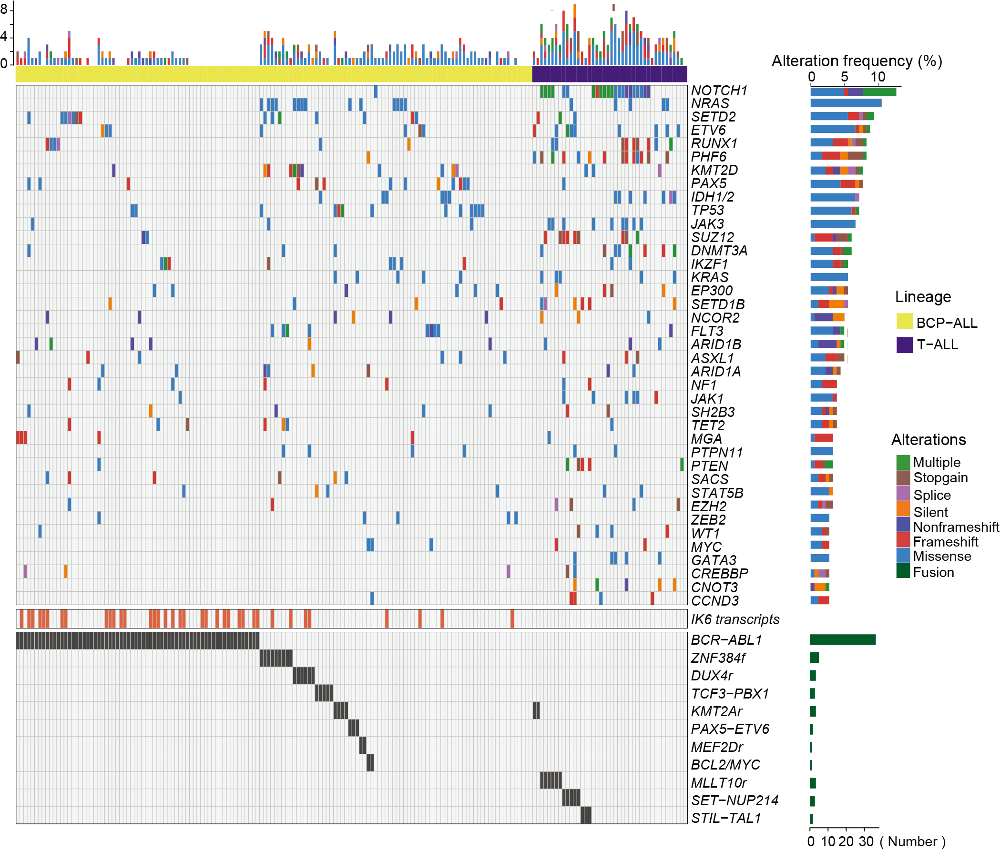
16.6 (S1 D) Scatter plot
A scatter plot suggests the existence of a potential relationship between aging and key mutations. The red line indicated the median age.
library(dplyr)
library(ggplot2)
sample <- readxl::read_excel("raw_data/Supplementary Tables.xlsx",sheet=1,skip=1) %>%
as.data.frame() %>%
filter(!is.na(RNA_ID_raw)) %>%
select(RNA_ID_raw,Age)
## mutation
mutation_T <- data.table::fread("raw_data/mutation_T_v1114_all.txt") %>%
as.data.frame() %>%
dplyr::select(V2,V17,V19) %>%
dplyr::rename("ID"="V2","Gene.refGene"="V17","ExonicFunc.refGene"="V19") %>%
dplyr::select(ID,`Gene.refGene`,`ExonicFunc.refGene`) %>%
dplyr::mutate(`ExonicFunc.refGene`=ifelse(`ExonicFunc.refGene` %in% c("frameshift deletion","frameshift insertion","frameshift substitution"),"Frameshift",
ifelse(`ExonicFunc.refGene` %in% c("nonframeshift deletion","nonframeshift insertion","nonframeshift substitution"),"Nonframeshift",
ifelse(`ExonicFunc.refGene` %in% ".","Splice",
ifelse(`ExonicFunc.refGene` %in% "nonsynonymous SNV","Missense",
ifelse(`ExonicFunc.refGene`=="startloss","Startloss",
ifelse(`ExonicFunc.refGene`=="stopgain","Stopgain",
ifelse(`ExonicFunc.refGene`=="synonymous SNV","Silent",`ExonicFunc.refGene`)))))))) %>%
unique() %>%
dplyr::mutate(`Gene.refGene` = ifelse(`Gene.refGene` %in% c("IDH1","IDH2"),"IDH1/2",`Gene.refGene`)) %>%
dplyr::group_by(Gene.refGene)
mutation_B <- data.table::fread("raw_data/mutation_B_v1114_all.txt") %>%
as.data.frame() %>%
dplyr::select(V2,V17,V19) %>%
dplyr::rename("ID"="V2","Gene.refGene"="V17","ExonicFunc.refGene"="V19") %>%
dplyr::select(ID,`Gene.refGene`,`ExonicFunc.refGene`) %>%
dplyr::mutate(`ExonicFunc.refGene`=ifelse(`ExonicFunc.refGene` %in% c("frameshift deletion","frameshift insertion","frameshift substitution"),"Frameshift",
ifelse(`ExonicFunc.refGene` %in% c("nonframeshift deletion","nonframeshift insertion","nonframeshift substitution"),"Nonframeshift",
ifelse(`ExonicFunc.refGene` %in% ".","Splice",
ifelse(`ExonicFunc.refGene` %in% "nonsynonymous SNV","Missense",
ifelse(`ExonicFunc.refGene`=="startloss","Startloss",
ifelse(`ExonicFunc.refGene`=="stopgain","Stopgain",
ifelse(`ExonicFunc.refGene`=="synonymous SNV","Silent",`ExonicFunc.refGene`)))))))) %>%
unique() %>%
dplyr::mutate(`Gene.refGene` = ifelse(`Gene.refGene` %in% c("IDH1","IDH2"),"IDH1/2",`Gene.refGene`)) %>%
dplyr::group_by(Gene.refGene)
mutation <- rbind(mutation_T,mutation_B) %>%
dplyr::filter(ID %in% sample$RNA_ID_raw) %>%
as.data.frame() %>%
select(ID,Gene.refGene) %>%
unique() %>%
left_join(sample,by=c("ID"="RNA_ID_raw")) %>%
filter(`Gene.refGene` %in% c("NOTCH1","NRAS","SETD2","ETV6","RUNX1","PHF6","KMT2D","PAX5","IDH1/2","TP53"))
mutation_median <- mutation %>%
group_by(Gene.refGene) %>%
summarise(m=median(Age),n=n()) %>%
arrange(m) %>%
mutate(tt=paste0(Gene.refGene,"(m=",m,";n=",n,")"))
mutation_sort <- mutation %>%
left_join(mutation_median,by="Gene.refGene") %>%
arrange(match(Gene.refGene,mutation_median$Gene.refGene)) %>%
mutate(tt=factor(tt,levels=unique(tt))) %>%
arrange(Age) %>%
mutate(ID=factor(ID,levels=unique(ID)))
p <- ggplot(mutation_sort,aes(ID,Age))+
geom_point()+
facet_wrap(vars(tt),nrow=1,scales = "free_x")+
theme_bw()+
theme(axis.text.x=element_blank(),axis.ticks.x=element_blank())+
labs(x=NULL)
ggsave("result/Figure1/S1D_rna_age_mutation.pdf",p,width=8,height = 3) 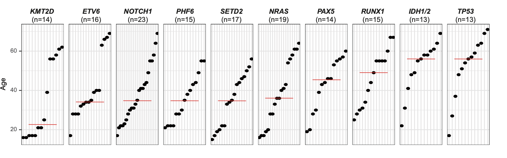
16.7 (S2 A) PCA
A substantial metabolic disturbance is observed in the serum of BCP-ALL/T-ALL (n=180) compared to HC (n=164), and there is no distinguishable boundary between lineage B and T ALL.
library(dplyr)
library(ggplot2)
#-------------------------------------------------------------------------------
# Step 1: Load patient's cell and serum metabolomics data
#-------------------------------------------------------------------------------
clinical <- data.table::fread("raw_data/clinical_all_v240328.txt") %>%
as.data.frame() %>%
dplyr::filter(group %in% c("A","HC")) %>%
dplyr::arrange(match(Lineage,c("B","T"))) %>%
dplyr::arrange(group)
dat <- data.table::fread("raw_data/serum_raw_sva_data_v240328.txt") %>%
as.data.frame() %>%
tibble::column_to_rownames("label") %>%
dplyr::select(clinical$METs_ID)
#-------------------------------------------------------------------------------
# Step 2: PCA
#-------------------------------------------------------------------------------
dat <- log2(dat+1)
group <- clinical$Lineage
pca <- stats::prcomp(t(dat), center = TRUE, scale. = TRUE)
variance = pca$sdev^2/sum(pca$sdev^2)
pca.data = data.frame(pca$x,group=group,label=rownames(pca$x))
p2 <- ggplot2::ggplot(pca.data,ggplot2::aes(PC1,PC2,color=group))+
ggplot2::geom_point()+
ggplot2::stat_ellipse( linetype = 2, size = 0.5)+
ggplot2::theme_bw()+
scale_color_manual(values=c("#E5E059","#007DDB","#4B0082"))+
ggplot2::theme(panel.grid.major = ggplot2::element_blank(),panel.grid.minor = ggplot2::element_blank())+
ggplot2::labs(x=paste0("PC1 (",signif(variance[1]*100,3),"%)"),
y=paste0("PC2 (",signif(variance[2]*100,3),"%)"))
ggsave("result/Figure1/S2A_PCA.pdf",p2,width=5,height = 4)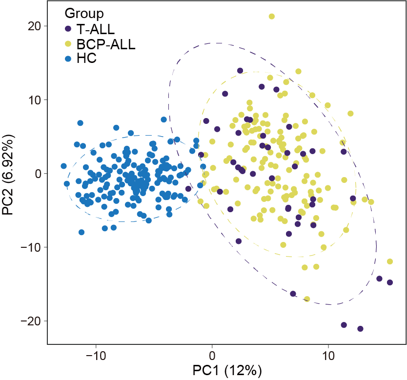
16.8 (S2 B) Volcano Plot
The volcano plot shows the distribution of differential metabolites. Noteworthy among the elevated metabolites were primary bile acids and their derivatives, whereas various carnitines were diminished. The dash line on the x-axis represents a fold change of 1.5 between BCP-ALL/T-ALL and HC, while the dash line on the y-axis represents adjusted P-value of 0.05.
library(dplyr)
library(ggplot2)
library(openxlsx)
library(ggrepel)
library(MNet)
#-------------------------------------------------------------------------------
# Step 1: Load data and set parameters
#------------------------------------------------------------------------------
# Data input for all clinical data
kid <- data.table::fread("raw_data/serum_metabolites_id_v240328.txt") %>%
as.data.frame()
clinical <- data.table::fread("raw_data/clinical_all_v240328.txt") %>%
as.data.frame() %>%
dplyr::filter(group %in% c("A","HC"))
# Differential metabolites
datRAW <- data.table::fread("raw_data/serum_raw_sva_data_v240328.txt") %>%
as.data.frame() %>%
tibble::column_to_rownames("label") %>%
dplyr::select(clinical$METs_ID)
#-------------------------------------------------------------------------------
# Step 2: Conduct variance analysis
#-------------------------------------------------------------------------------
group <- clinical$group
group[group=="A"] <- "tumor"
group[group=="HC"] <- "normal"
diff_result <- DM(datRAW,group)
write.table(diff_result,"result/Figure1/AvsHC.txt",quote=F,row.names=T,sep="\t")
#-------------------------------------------------------------------------------
# Step 3: Volcano plot
#-------------------------------------------------------------------------------
mydata <- data.table::fread("result/Figure1/AvsHC.txt") %>%
as.data.frame() %>%
dplyr::left_join(kid,by=c("Name"="query")) %>%
dplyr::mutate(
Condition=ifelse(Fold_change >= 3/2 & Padj_wilcox< 0.05,"sig up",
ifelse(Fold_change <= 2/3 & Padj_wilcox < 0.05,"sig down","no sig"))) %>%
dplyr::mutate(super.class=factor(super.class))
mydata_filter <- mydata %>%
dplyr::filter(Condition %in% c("sig up","sig down"))
write.table(mydata_filter,"result/Figure1/AvsHC_diff.txt",quote=F,row.names=F,sep="\t")
bile_car <- subset(mydata,mydata$Padj_wilcox < 0.05 & (mydata$Fold_change > 1.5|mydata$Fold_change < 2/3)) %>%
mutate(carnitines = ifelse(grepl("carniti",Name),"carnitines",NA)) %>%
dplyr::filter(main.class == "Bile acids"| PATHWAY=="Primary bile acid biosynthesis"|carnitines=="carnitines") %>%
mutate(text.label=ifelse(main.class=="","",Name))
cols <- c("Amino acids and peptides" ="#1B9E77",
Carbohydrates="#D95F02","Cofactors and Vitamins"="#7570B3",
Energy="#E7298A",Lipids="#66A61E",Nucleotides="#E6AB02",
Other="#A6761D",Xenobiotics="#666666")
(p2 <- ggplot(mydata,aes(log2(Fold_change),-log10(Padj_wilcox),color=super.class))+
geom_point(size=2)+
scale_colour_manual("super.class", values=cols)+
geom_vline(xintercept=c(-log2(1.5),log2(1.5)), linetype = 'dashed',color="gray")+
geom_hline(yintercept = -log10(0.05),linetype='dashed',color="gray")+
theme_bw()+
geom_text_repel(data =bile_car,aes(label=text.label),
size=2,max.overlaps = Inf)+
theme(panel.grid.major = element_blank(),
panel.grid.minor = element_blank())+
labs(x="log2(FoldChange)",y="-log10(Padj)",
title="Differential metabolites"))
ggsave(p2,filename = "result/Figure1/S2B_Volcano.pdf",width=13,height=9)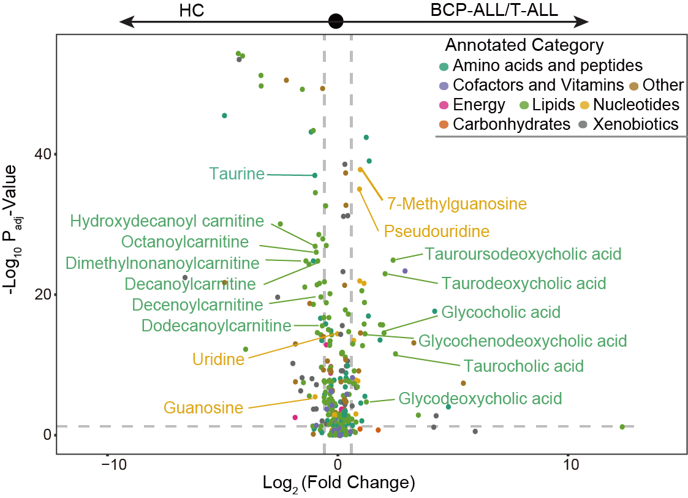
16.9 (S2 C) MSEA
Metabolite set enrichment analysis (MSEA) for BCP-ALL/T-ALL vs. HC reveals a significant upregulation of primary bile acid metabolism in ALL serum.
library(dplyr)
library(MNet)
library(ggplot2)
#-------------------------------------------------------------------------------
# Step 1: Load data and set parameters
#------------------------------------------------------------------------------
clinical <- data.table::fread("raw_data/clinical_all_v240328.txt") %>%
as.data.frame() %>%
dplyr::filter(group %in% c("A","HC"))
kid <- data.table::fread("raw_data/serum_metabolites_id_v240328.txt") %>%
as.data.frame() %>%
dplyr::mutate(KEGG=ifelse(KEGG=="None",query,KEGG))
dat_allvsHC <- data.table::fread("raw_data/serum_raw_sva_data_v240328.txt") %>%
as.data.frame() %>%
tibble::column_to_rownames("label") %>%
dplyr::select(clinical$METs_ID)
#-------------------------------------------------------------------------------
# Step 2: Conduct variance analysis
#-------------------------------------------------------------------------------
group <- clinical$group
group[which(group=="A")] <- "tumor"
group[which(group=="HC")] <- "normal"
mlimma_result <- mlimma(log2(dat_allvsHC+1),group) %>%
dplyr::inner_join(kid,by=c("name"="query")) %>%
dplyr::arrange(desc(logFC)) %>%
dplyr::distinct(KEGG,.keep_all = TRUE)
Ranks_all <- mlimma_result$logFC
names(Ranks_all) <- mlimma_result$KEGG
#-------------------------------------------------------------------------------
# Step 3: MSEA
#-------------------------------------------------------------------------------
set.seed(20)
p <- pMSEA("Primary bile acid biosynthesis",Ranks_all,gseaParam=0.75,nPermSimple=1000,out="metabolite")
ggsave("result/Figure1/S2C_Primary_bile_acid.pdf",p,width=5,height = 4)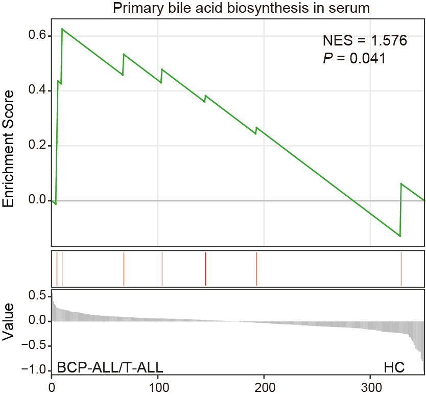
16.11 (S2 E) Box plot
The relative levels of 6 ageing-related metabolites. Related to Fig. 2b. Wilcoxon test was performed; **** P < 0.001.
library(dplyr)
library(ggplot2)
sample <- readxl::read_excel("raw_data/Supplementary Tables.xlsx",sheet=1,skip=1) %>%
as.data.frame() %>%
filter(!is.na(METs_D0_ID)) %>%
select(METs_D0_ID,Age) %>%
mutate(Age_Type = ifelse(Age > 40,"tumor",
ifelse(Age <= 40,"normal",NA)))
dat <- readxl::read_excel("raw_data/Supplementary Tables.xlsx",sheet=4,skip=1) %>%
filter(Metabolite %in% c("Hydroxy-cholenoic acid","L-Threonine",
"p-Hydroxyphenylacetic acid","Glucose","Cholic acid",
"Ursodeoxycholic acid")) %>%
tibble::column_to_rownames("Metabolite") %>%
select(sample$METs_D0_ID) %>%
log1p() %>%
tibble::rownames_to_column(var="metabolite")
dat_melt_D0 <- reshape2::melt(dat,id="metabolite") %>%
left_join(sample,by=c("variable"="METs_D0_ID")) %>%
mutate(group="D0") %>%
mutate(Age_Type=ifelse(Age_Type=="tumor","Old",
ifelse(Age_Type=="normal","Young","a")))
## HC
## sample
HCm <- c("H280","H281")
sample <- data.table::fread("raw_data/clinical_all_v231116.txt") %>%
as.data.frame() %>%
dplyr::filter(!bianhao %in% c(HCm)) %>%
dplyr::filter(sample_id!="ND") %>%
dplyr::select(bianhao,Lineage,Age) %>%
dplyr::distinct(bianhao,.keep_all=TRUE) %>%
dplyr::filter(Lineage == "HC") %>%
mutate(bianhao=paste0(bianhao,"_METs")) %>%
mutate(Age_Type = ifelse(Age > 40,"tumor",
ifelse(Age <= 40,"normal",NA)))
dat <- readxl::read_excel("raw_data/Supplementary Tables.xlsx",sheet=4,skip=1) %>%
filter(Metabolite %in% c("Hydroxy-cholenoic acid",
"p-Hydroxyphenylacetic acid","Glucose","Cholic acid",
"Ursodeoxycholic acid")) %>%
tibble::column_to_rownames("Metabolite") %>%
select(sample$bianhao) %>%
log1p() %>%
tibble::rownames_to_column(var="metabolite")
dat_melt_HC <- reshape2::melt(dat,id="metabolite") %>%
left_join(sample,by=c("variable"="bianhao")) %>%
mutate(group="HC") %>%
select(-Lineage) %>%
mutate(Age_Type=ifelse(Age_Type=="tumor","Old",
ifelse(Age_Type=="normal","Young","a")))
dat_result <- rbind(dat_melt_D0,dat_melt_HC)
p <- ggplot(dat_result,aes(group,value,fill=Age_Type,color=Age_Type))+
geom_boxplot()+
geom_jitter()+
facet_wrap(vars(metabolite),nrow = 3,scales = "free_y")+
theme_bw()
#"#0095FF","#F94141"
dat_melt_D0$Age_Type <- factor(dat_melt_D0$Age_Type,levels=c("Young","Old"))
p <- ggplot(dat_melt_D0,aes(Age_Type,value))+
geom_boxplot()+
geom_jitter(aes(color=Age_Type),size=.5)+
ggpubr::stat_compare_means(label="p.signif")+
scale_color_manual(values=c("Old"="#F94141","Young"="#0095FF"))+
facet_wrap(vars(metabolite),nrow = 2,scales = "free_y")+
theme_bw()+theme(legend.position = "none")+
labs(x=NULL,y=NULL)
ggsave("result/Figure1/S2E_boxplot_5_D0.pdf",p,width=90,height = 70,units="mm")
dat_melt_HC$Age_Type <- factor(dat_melt_HC$Age_Type,levels=c("Young","Old"))
p <- ggplot(dat_melt_HC,aes(Age_Type,value))+
geom_boxplot()+
geom_jitter(aes(color=Age_Type),size=.8)+
ggpubr::stat_compare_means(label="p.signif")+
scale_color_manual(values=c("Old"="#F94141","Young"="#0095FF"))+
facet_wrap(vars(metabolite),nrow = 2,scales = "free_y")+
theme_bw()+theme(legend.position = "none")+
labs(x=NULL,y=NULL)
ggsave("result/Figure1/S2E_boxplot_5_HC.pdf",p,width=90,height = 70,units="mm")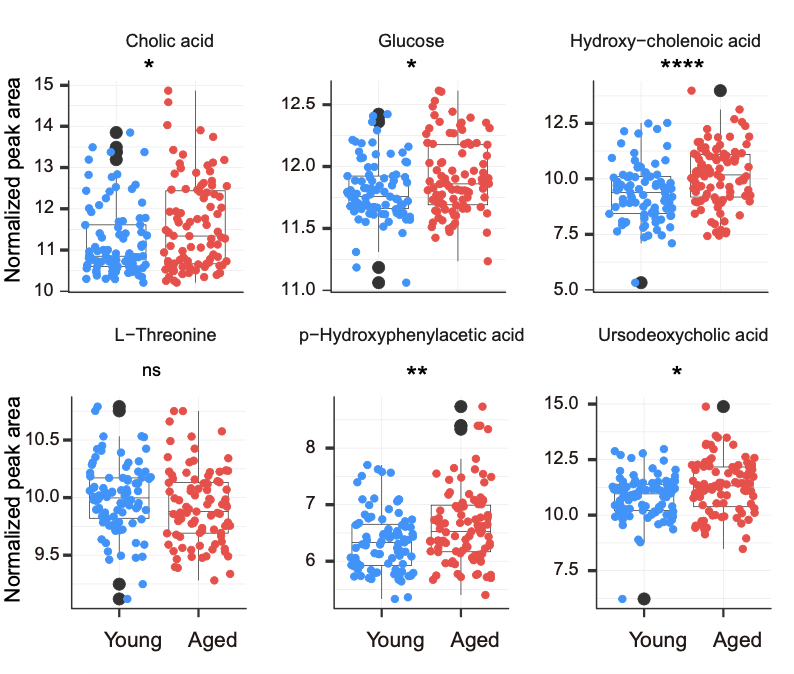
16.12 (S2 F) Overall Survival analysis
Overall Survival analysis reveals that serum level of taurocholic acid as a poor prognostic indicator.
library(dplyr)
library(survival)
library(stringr)
library(survminer)
sample_patient_all <- readxl::read_excel("raw_data/08 队列病人生存资料.xlsx") %>%
as.data.frame() %>%
dplyr::select(bianhao,OS,OS_stat) %>%
mutate(Pid=gsub("A|C|E","RJ-",bianhao)) %>%
mutate(METs_D0_ID=paste0(Pid,"_METs_D0")) %>%
filter(!is.na(OS)) %>%
dplyr::mutate(OS=(OS)/30) %>%
mutate(OS_status=OS_stat)
dd <- readxl::read_excel("raw_data/Supplementary Tables.xlsx",sheet=4,skip=1) %>%
as.data.frame()
overlap_name <- intersect(names(dd),sample_patient_all$METs_D0_ID)
dd_temp <- dd %>%
dplyr::select(Metabolite,all_of(overlap_name))
dd <- dd_temp %>%
dplyr::filter(Metabolite %in% "Taurocholic acid") %>%
tibble::column_to_rownames("Metabolite") %>%
log1p() %>%
t() %>%
as.data.frame() %>%
tibble::rownames_to_column(var="sample") %>%
dplyr::inner_join(sample_patient_all,by=c("sample"="METs_D0_ID")) %>%
dplyr::arrange(match(sample,sample_patient_all$METs_D0_ID)) %>%
dplyr::rename("TC"="Taurocholic acid") %>%
dplyr::mutate(TC_type=ifelse(TC >= median(TC),"High","Low"))
fit1 <- survfit(Surv(OS, OS_status) ~ TC_type, data = dd)
p1 <- ggsurvplot(fit1,
data = dd,
xlab = 'Time (Months)',
pval = TRUE,
risk.table = TRUE,
risk.table.height = 0.28,
conf.int = TRUE, conf.int.alpha = 0.05,
palette = c("#d80700","#00599F"),
axes.offset = TRUE,
break.time.by = 12, xlim = c(0, 60),
title= "Taurocholic acid")
pdf("result/Figure1/S2F_new-Taurocholic acid.pdf",onefile = F)
print(p1)
dev.off()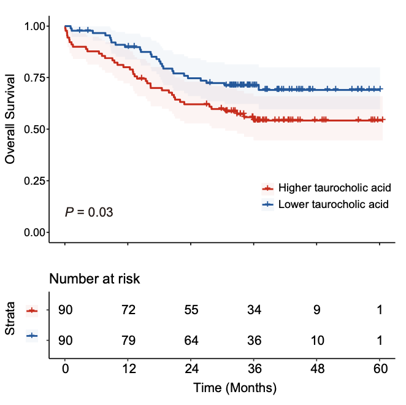
16.13 (S2 G) Box plot
The relative levels of pseudouridine and 7-methylguanosine compared to their precursors, uridine and guanosine, respectively. Wilcoxon test was performed; **** P < 0.001.
library(dplyr)
library(MNet)
library(ggpubr)
#-------------------------------------------------------------------------------
# Step 1: Load data and conduct mlimma
#------------------------------------------------------------------------------
## BCP-ALL vs HC
clinical <- data.table::fread("raw_data/clinical_all_v240328.txt") %>%
as.data.frame() %>%
dplyr::filter(group %in% c("A","HC")) %>%
dplyr::select(METs_ID,Lineage)
datRAW <- data.table::fread("raw_data/serum_raw_sva_data_v240328.txt") %>%
as.data.frame() %>%
dplyr::select(label,all_of(clinical$METs_ID)) %>%
tibble::column_to_rownames("label")
clinicalBH <- clinical %>%
dplyr::filter(clinical$Lineage %in% c("B","HC"))
datBH <- datRAW %>%
dplyr::select(clinicalBH$METs_ID) %>%
dplyr::select(starts_with("RJ"),everything())
datBH <- log2(datBH+1)
dim(datBH)
matching_columns <- grep("H",colnames(datBH),value = T)
length(matching_columns)
length(datBH)
group_BH <- c(rep("tumor",137),rep("normal",164))
table(group_BH)
meta_BH <- mlimma(datBH,group = group_BH)
write.table(meta_BH,"result/Figure1/S2A_BvsH.txt",sep = "\t",row.names = F,quote = F)
## T-ALL vs HC
clinicalTH <- clinical %>%
dplyr::filter(clinical$Lineage %in% c("T","HC"))
datTH <- datRAW %>%
dplyr::select(clinicalTH$METs_ID) %>%
dplyr::select(starts_with("RJ"),everything())
datTH <- log2(datTH+1)
dim(datTH)
matching_columns <- grep("H",colnames(datTH),value = T)
length(matching_columns)
length(datTH)
group_TH <- c(rep("tumor",43),rep("normal",164))
table(group_TH)
meta_TH <- mlimma(datTH,group = group_TH)
write.table(meta_TH,"result/Figure1/S2A_TvsH.txt",sep = "\t",row.names = F,quote = F)
## selected boxplots
label <- c("Pseudouridine","7-Methylguanosine","Guanosine","Uridine")
meta_BH_filter <- meta_BH %>%
dplyr::filter(name %in% label) %>%
dplyr::select(P.Value,name) %>%
dplyr::mutate(group=rep("BH",4))
meta_TH_filter <- meta_TH %>%
dplyr::filter(name %in% label) %>%
dplyr::select(P.Value,name) %>%
dplyr::mutate(group=rep("TH",4))
meta_all_filter <- rbind(meta_BH_filter,meta_TH_filter) %>%
dplyr::mutate(name=factor(name,levels=label)) %>%
dplyr::arrange(name)
write.table(meta_all_filter,"result/Figure1/S2A_meta_groupcomparison.txt",quote = F,row.names = F,sep = "\t")
#-------------------------------------------------------------------------------
# Step 2: Boxplot
#------------------------------------------------------------------------------
name <- c("Pseudouridine","7-Methylguanosine","Guanosine","Uridine")
datRAW <- data.table::fread("raw_data/serum_raw_sva_data_v240328.txt") %>%
as.data.frame() %>%
dplyr::select(label,all_of(clinical$METs_ID))
drawdata <- datRAW %>%
dplyr::filter(label %in% name) %>%
dplyr::select(label,clinical$METs_ID) %>%
tibble::column_to_rownames("label") %>%
myscale() %>%
t() %>% as.data.frame() %>%
tibble::rownames_to_column("METs_ID") %>%
dplyr::left_join(clinical,by="METs_ID") %>%
dplyr::select(METs_ID,Guanosine,`7-Methylguanosine`,Uridine,Pseudouridine,Lineage)
for (i in 2:ncol(drawdata)-1) {
variable=colnames(drawdata)[i]
df <- drawdata %>%
dplyr::select(all_of(variable),Lineage)%>%
rstatix::reorder_levels(Lineage, order = c("HC","B","T"))
df$index <- df[, 1]
my_comparisons <- list( c("HC", "B"), c("HC", "T"), c("B", "T") )
assign(paste0("pp", i),
ggplot(df, aes(y = index, x = Lineage,fill=factor(Lineage))) +
geom_boxplot(outlier.shape = NA)+
geom_point(position = "jitter",size=0.5,alpha=0.8)+
scale_fill_manual(values=c("#007DDB","#E5E059","#4B0082"))+
theme_classic()+
theme(legend.position="none")+ylim(-5,5)+
labs(x=paste0(variable),y=NULL)
)
}
library(cowplot)
(p1 <- plot_grid(pp2, pp3, pp4,pp5,nrow=2))
ggsave(p1,filename="result/Figure1/S2G_boxplot.pdf",
width=12,height=10)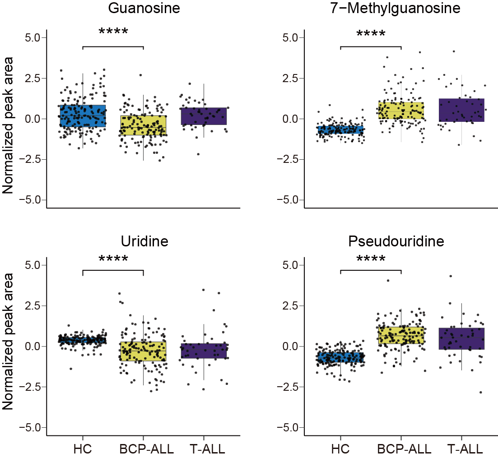
16.14 (S2 H) Metabolism Set Enrichment Analysis
The pathway enrichment analysis reveals pathways influenced by the response of various body organs, particularly noteworthy were the environmental information processing pathways. ABC: ATP-binding cassette transporters.
library(tidymass)
library(dplyr)
#-------------------------------------------------------------------------------
# Step 1: Load data and set parameters
#------------------------------------------------------------------------------
kid <- data.table::fread("raw_data/serum_metabolites_id_v240328.txt") %>%
as.data.frame()
mydata <- data.table::fread("result/Figure1/AvsHC.txt") %>%
as.data.frame() %>%
dplyr::left_join(kid,by=c("Name"="query")) %>%
dplyr::filter(Padj_wilcox < 0.05)
data("kegg_hsa_pathway", package = "metpath")
## Remove the disease pathway
pathway_class = metpath::pathway_class(kegg_hsa_pathway)
remain_idx = pathway_class %>%
unlist() %>%
stringr::str_detect("Disease") %>%
`!`() %>%
which()
pathway_database = kegg_hsa_pathway[remain_idx]
#-------------------------------------------------------------------------------
# Step 2: Enrichment analysis
#------------------------------------------------------------------------------
diff.kid <- mydata %>%
dplyr::filter(KEGG!="None") %>%
pull(KEGG) %>%
unique()
result <- enrich_kegg(query_id = diff.kid,
query_type = "compound",
id_type = "KEGG",
pathway_database = pathway_database,
p_cutoff = 0.05,
p_adjust_method = "BH",
threads = 5)
msea_table <- result@result %>%
dplyr::arrange(p_value) %>%
data.frame()
tablefilter <- dplyr::filter(msea_table,p_value<0.05)
write.csv(msea_table,"result/Figure1/S2H_table.csv")
pic <- enrich_scatter_plot(object = result,
y_axis = "p_value", y_axis_cutoff = 0.05,
point_size = "mapped_percentage",label_size = 3)
ggsave(pic,filename = "result/Figure1/S2H_enrichment.pdf",width=13,height=9)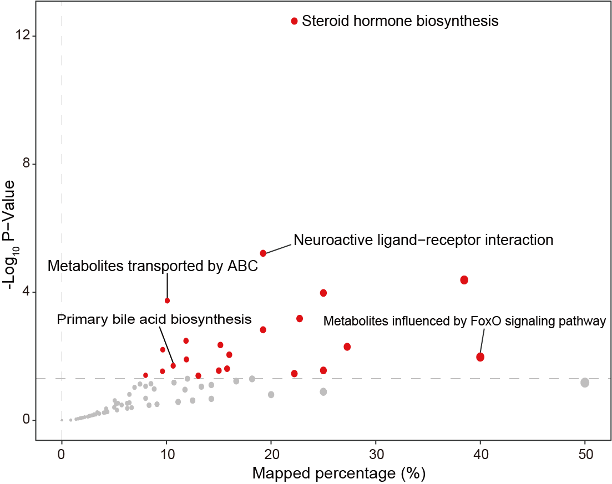